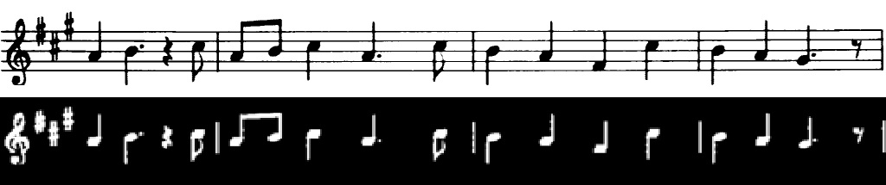

Extraction de lignes
Le kernel définit la forme que l’on souhaite conserver dans l’image. Lors de l’érosion, un pixel blanc est conservé uniquement si l’ensemble du kernel peut « tenir » sur une zone blanche. Autrement dit, seules les structures de l’image ayant une forme compatible avec le kernel survivent.
Lorsque l’on choisit un kernel en forme de ligne, l’opération devient directionnelle. Un kernel vertical (largeur 1, grande hauteur) permet de conserver les structures verticales, tandis que les lignes horizontales, trop fines dans cette direction, sont supprimées.
Plus un kernel est grand en taille moins l'extraction est précise
Après l’érosion, la dilatation est appliquée avec le même kernel. Elle permet de restaurer l’épaisseur des structures qui ont survécu à l’érosion, sans faire réapparaître celles qui ont été éliminées. Pour l’enchaînement érosion + dilatation on parle aussi d'ouverture (voir Transformation Morphologique).
Ainsi, pour supprimer les lignes verticales, on utilise un kernel horizontal, car seules les structures horizontales correspondent à sa forme et survivent. Inversement, pour extraire ou conserver les lignes verticales, on utilise un kernel vertical.
Avant et après l'extraction de ligne Vertical
Extraction de ligne vertical en Python
import numpy as np
import sys
import cv2 as cv
import matplotlib.pyplot as plt
# load the image
src = cv.imread('note.png', cv.IMREAD_GRAYSCALE)
# Transform source image to gray if it is not already
if len(src.shape) != 2:
gray = cv.cvtColor(src, cv.COLOR_BGR2GRAY)
else:
gray = src
plt.imshow(gray, cmap = 'gray')
plt.axis('off') # Hide axes
plt.show()
# binarise l'image
_,thresh = cv.threshold(gray,210,255,cv.THRESH_BINARY)
thresh = ~thresh # inverse l'intensité --> objet toujour blanc
res = np.copy(thresh)
plt.imshow(thresh, cmap = 'gray')
plt.axis('off') # Hide axes
plt.show()
vertical = np.copy(thresh)
# Specify size on vertical axis
rows = vertical.shape[0]
vertical_size = rows//50
print(vertical_size)
# Create structure element for extracting vertical lines through morphology operations
verticalStructure = cv.getStructuringElement(cv.MORPH_RECT, (1, vertical_size))
# Apply morphology operations
vertical = cv.erode(vertical, verticalStructure)
vertical = cv.erode(vertical, verticalStructure)
vertical = cv.erode(vertical, verticalStructure)
vertical = cv.dilate(vertical, verticalStructure)
# Show extracted vertical lines
plt.imshow(vertical, cmap = 'gray')
plt.axis('off') # Hide axes
plt.show()